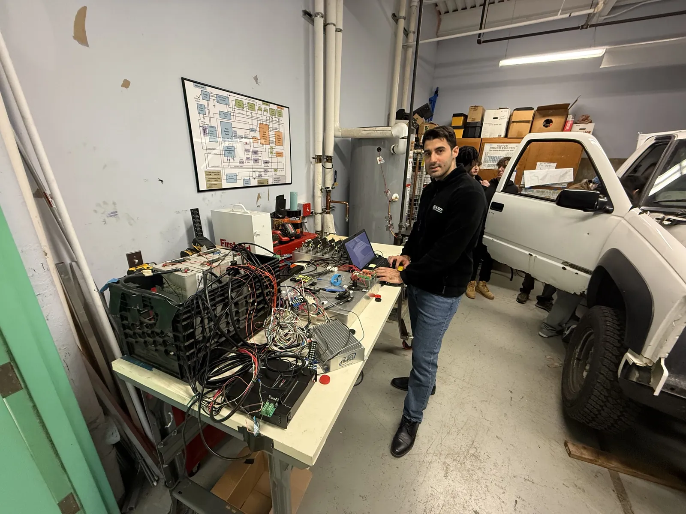
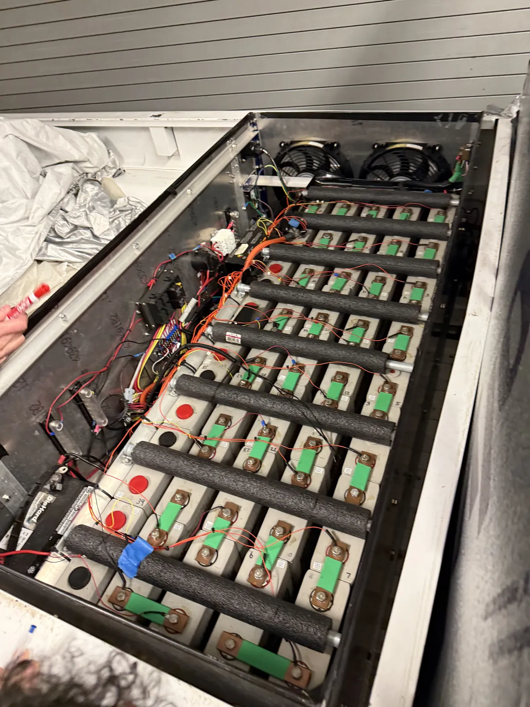
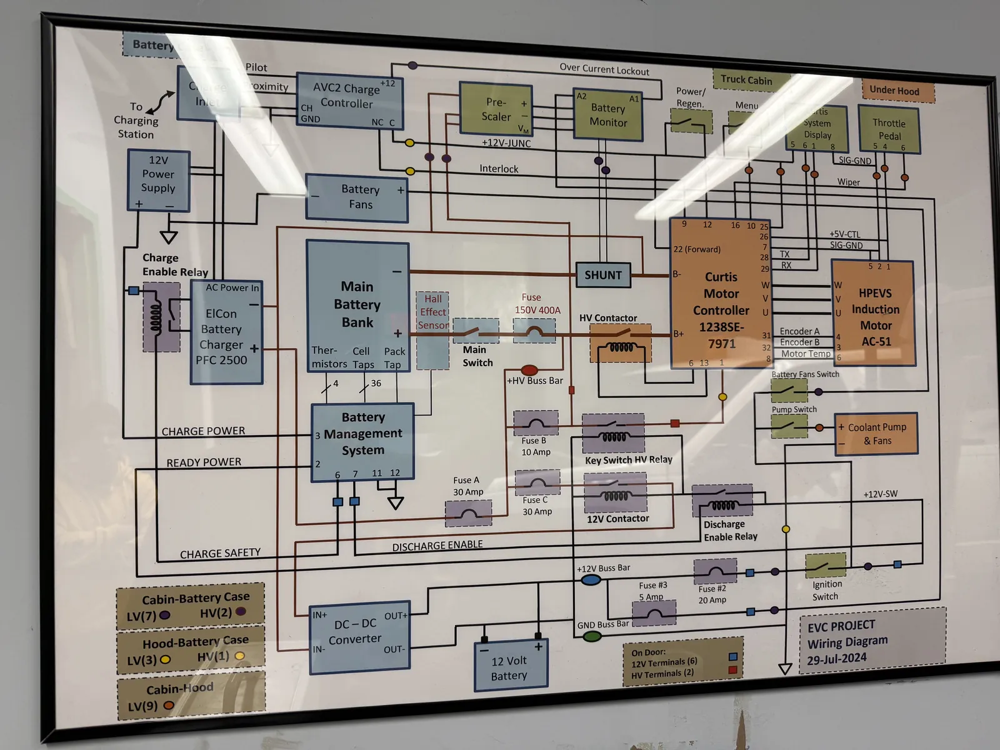
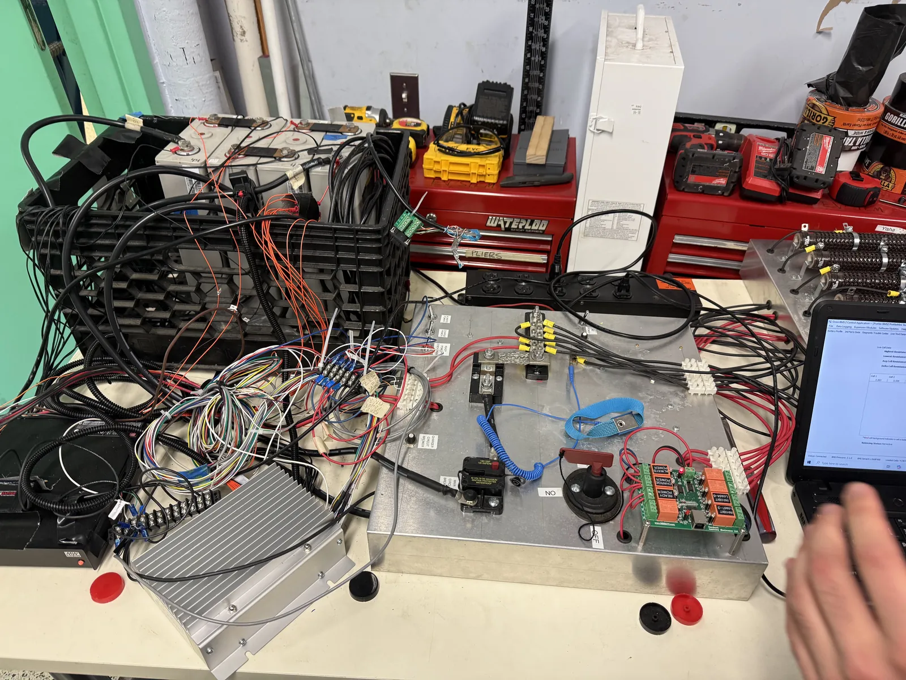
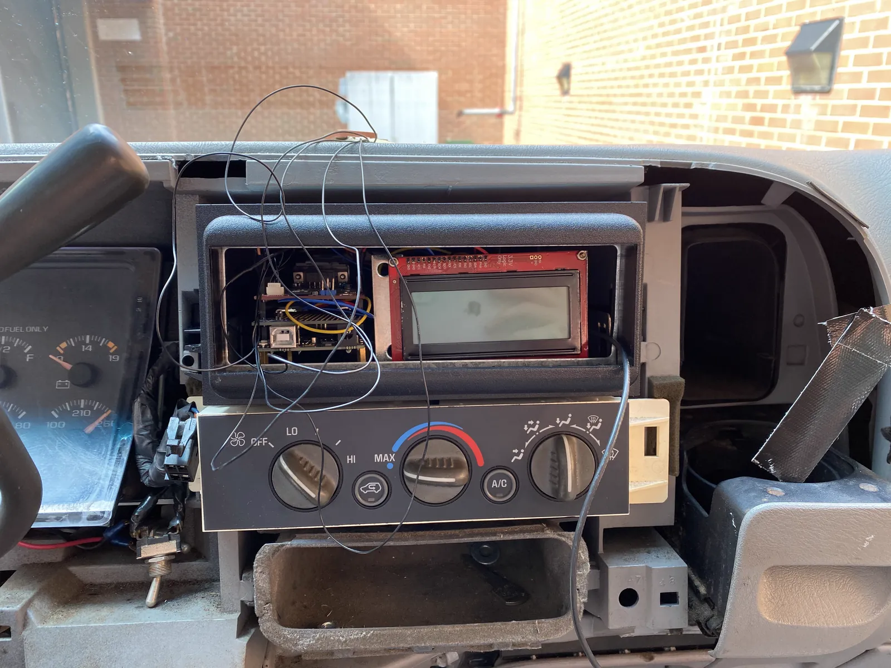
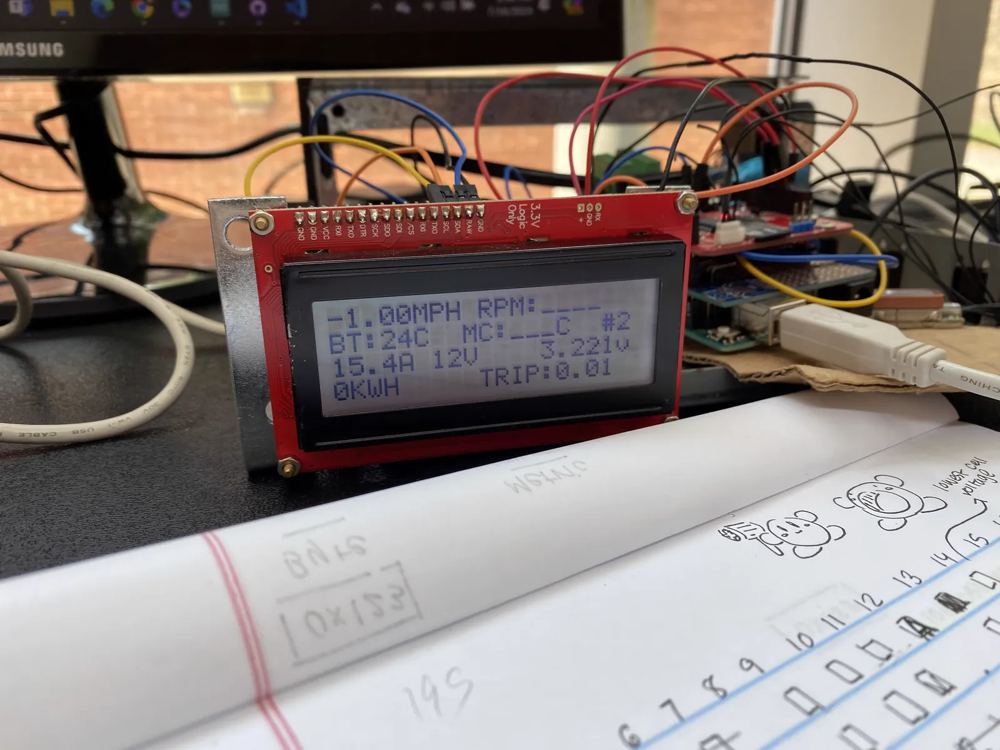
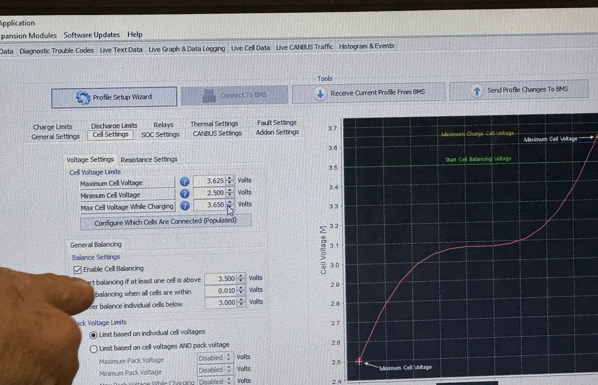
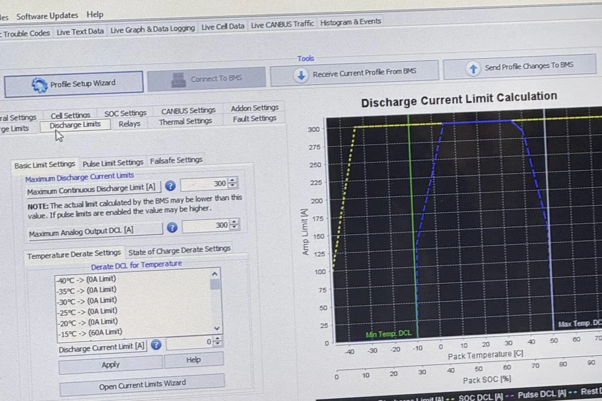
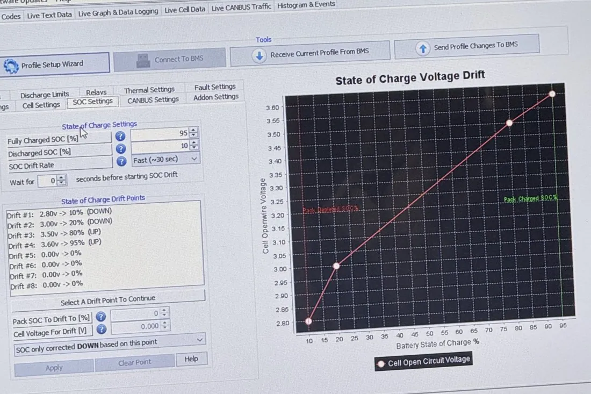

Instrumenting an electric pickup truck
STEM Research Center, Bergen Community College
Member of a nine-student team · 2024 – 2025 · CAN bus and data logging

The vehicle is a 1998 Chevrolet K1500 pickup converted to electric drive: an HPEVS AC-51 induction motor coupled to the original transmission, a Curtis 1238SE motor controller, and a 35-cell series pack of 180 Ah lithium iron phosphate cells watched over by an Orion battery-management system (BMS). In 2024–25 our team doubled the pack to two cells in parallel per series position (117 V nominal, 41 kWh) and set out to measure what the truck was actually doing on the road. My part was the measurement chain: getting data off the vehicle’s CAN bus and onto a screen and a log file.


Decoding the CAN bus
The BMS and motor controller report on a 125 kbit/s CAN bus, but only as raw eight-byte frames. With a teammate I wrote a sniffer for an Arduino Mega with an MCP2515 CAN shield that listens to the bus and decodes the frames we needed: pack current and voltage, the lowest cell voltage and which cell it is, state of charge, and the charge and discharge current limits the BMS is enforcing at that moment. That last pair matters most, because a falling discharge limit is what shuts the truck down. I then wrote the first version of the in-cab logger around the same decoder, adding GPS position and speed, an SD-card log and a 20×4 character display. The logger was also my entry in the HackBCC 2025 hackathon, Smart Transportation track.



Reading the battery-management system
Before decoding anything I had to understand what the BMS itself believes about the pack, because every number on the bus is one of its estimates or one of its limits. These are the configuration screens we worked through on the bench, photographed off the laptop.



What the measurements showed
The team ran four instrumented road tests in the summer of 2025. Before the upgrade the BMS cut power near 360 A; after it, the truck drew 450 A without a shutdown. The logs also explained the remaining shutdowns: the BMS temperature sensors had been left coiled on top of the BMS unit instead of on the cells, reading about 10 °C hot, and above 40 °C the BMS derates the discharge limit to under 300 A. A wrong reading in one sensor, a conservative rule in the controller, and a stalled truck: the kind of failure that only shows up once the data is on the screen.
| Vehicle | 1998 Chevrolet K1500, original transmission and four-wheel drive retained |
|---|---|
| Drive | HPEVS AC-51 induction motor (88 hp), Curtis 1238SE controller |
| Pack | LiFePO4, 180 Ah cells, 35S → 2P35S, 117 V, 41 kWh |
| Bus | CAN at 125 kbit/s; BMS frames for current, voltage, lowest cell, state of charge, current limits |
| Logger | Arduino Mega 2560, MCP2515 CAN shield, EM-506 GPS, microSD, 20×4 I2C display |